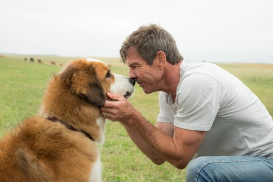

¿Por qué adoptar?
Desafortunadamente sigue siendo habitual que algunos propietarios que compran un cachorro de forma impulsiva decidan abandonarlo o dejarlo en una protectora de perros cuando se dan cuenta de que convivir con él implica un compromiso importante que puede superar los 10 años, en términos de dedicación, paciencia y reestructuración de la rutina o estilo de vida adquirido.

Dale un nuevo hogar a un perro abandonado

Encuentra un amigo fiel